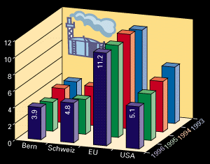
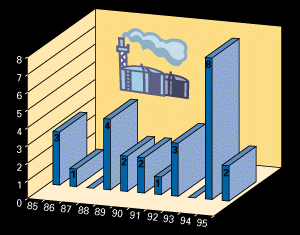
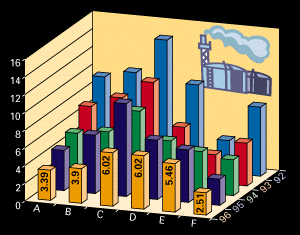

Arbeitskräfte
![[Bild nicht verfügbar]](assets/Arbkrafte.png)



A =
Deutschland
B = Frankreich
C = Italien
D = Grossbritannien
E = USA
F = Schweiz
| Produktionsfaktoren | |||
Arbeitskräfte |
|||
| Die in der Agglomeration Bern ansässige Bevölkerung ist sehr gut ausgebildet und geprägt durch die in Bern ansässige, hochentwickelte Dienstleistungswirtschaft. | |||
| Tabelle 1: Arbeitsstätten und Beschäftigte nach Wirtschaftssektoren (Quelle: BFS) | |||
|
|||
| Die gute Ausbildung und
die hohe Flexibilität der Arbeitskräfte wirken sich
auch positiv auf die Arbeitslosenquote aus. Die
Arbeitslosigkeit ist im internationalen und nationalen
Vergleich unterdurchschnittlich. |
|||
| Tabelle 3: Arbeitslosenquote in Prozenten (Quelle: BFS) | |||
 |
|||
| Die tiefe Arbeitslosigkeit
trägt wesentlich zur sozialen Sicherheit des Standorts
Schweiz bei. Diese Tatsache widerspiegelt sich deutlich
in der Anzahl der kollektiven Arbeitsstreitigkeiten in
der Schweiz im Verlauf der letzten zehn Jahre. |
|||
| Tabelle 4: Anzahl kollektive Arbeitsstreitigkeiten in der Schweiz (1985-1995) (Quelle: BFS) | |||
 |
|||
| Kapital | |||
| Die Beschaffung von
Kapital ist in der Schweiz nach wie vor zu sehr
günstigen Konditionen möglich. Ein weiterer Punkt, der
für einen Standort in der Schweiz und im Grossraum Bern
spricht. |
|||
| Tabelle 5: Zinssätze für langfristiges Kapital | |||
 |
A =
Deutschland |
||
| Im weiteren können Investitionsprojekte von Unternehmungen im Kanton Bern nach Massgabe des Gesetzes zur Fürderung der Wirtschaft von der kantonalen Wirtschaftsfürderung mitfinanziert bzw. der Zins verbilligt werden. | |||